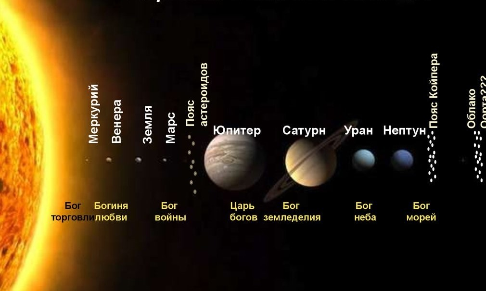

|
|
Теоретическая часть
- Колонизация – это заселение и хозяйственное освоение пустующих земель.
-
- Планета – согласно определению, принятому Международным астрономическим союзом в 2006 году, – это небесное тело, обращающееся вокруг звезды, достаточно массивное, чтобы поддерживать гидростатическое равновесие (иметь шарообразную форму) и расчищать свою орбиту от других объектов.
- Звезда – это массивное самосветящееся небесное тело, состоящее из газа или плазмы, в котором происходят, происходили или будут происходить термоядерные реакции.
- Спутник – это небесное тело, обращающееся по определенной траектории (орбите) вокруг другого объекта в космическом пространстве под действием гравитации.
- Планетарная система – система звезд и различных не звёздообразных астрономических объектов: планет и их спутников, карликовых планет и их спутников, астероидов, метеороидов, комет и космической пыли, – которые обращаются вокруг общего центра масс.
- Галактика – это гигантское организованное скопление звезд, число которых может составлять от миллиона до нескольких миллиардов.
Классификация планет:
| По размеру |
|---|
| Планеты-гиганты (газовые планеты) |
Планеты земной группы (малые планеты) |
Карликовые планеты |
| Юпитер, Сатурн, Уран, Нептун |
Меркурий, Земля, Венера, Марс |
Плутон, Церера, Хаумеа, Макемаке и др. |
| По расположению относительно Земли |
|---|
Внутренние
(ближе к Солнцу, чем Земля) |
Внешние
(дальше от Солнца, чем Земля) |
| Меркурий, Венера |
Марс, Юпитер, Сатурн, Уран, Нептун |
- Терраформирование – это изменение климатических условий планеты, спутника или же иного космического тела для приведения атмосферы, температуры и экологических условий в состояние, пригодное для обитания земных животных и растений.
Строение Солнечной системы:
- Адрес Земли:
- Вселенная
- Галактическая нить Персея-Пегаса
- Комплекс сверхскоплений Рыб-Кита
- Местная группа галактик
- Галактика Млечный Путь (Дорога Соломщика)
- Рукав Ориона
- Солнечная система
- Земля
Параметры Земли:
| Средний радиус: |
6371,0 км |
| Масса: |
5,9726*1024 кг |
| Ускорение свободного падения: |
9,780327 м/с² |
| Расстояние от Солнца: |
149 597 870,691 км |
| Один оборот вокруг Солнца: |
365,2564
земных дней |
| Продолжительность суток на планете: |
23 ч 56 мин 4,100 с
(около 24 ч) |
| Температура на поверхности: |
14 ° С |
- Точки Лагранжа (L-точки) – это точки в системе из двух массивных тел, в которых третье тело с пренебрежимо малой массой, не испытывающее воздействия никаких других сил, кроме гравитационных, со стороны двух первых тел, может оставаться неподвижным относительно этих тел.
|

Солнечная система

|